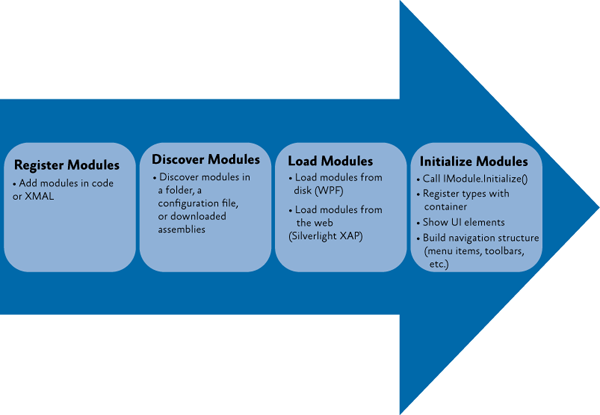
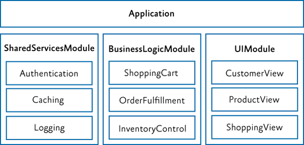
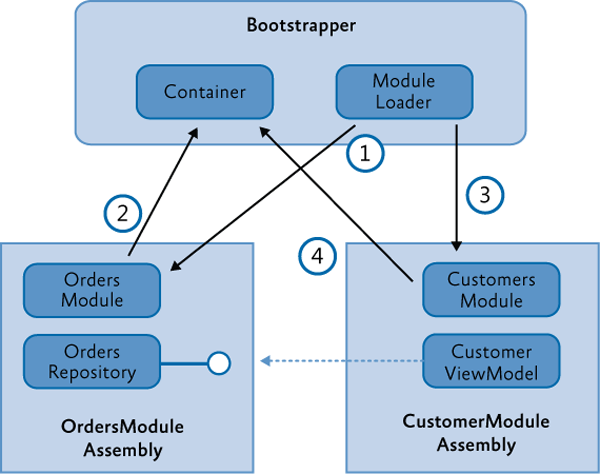

Modular Application Development Using Prism Library for WPF
A modular application is an application that is divided into a set of loosely coupled functional units (named modules) that can be integrated into a larger application. A client module encapsulates a portion of the application's overall functionality and typically represents a set of related concerns. It can include a collection of related components, such as application features, including user interface and business logic, or pieces of application infrastructure, such as application-level services for logging or authenticating users. Modules are independent of one another but can communicate with each other in a loosely coupled fashion. Using a modular application design makes it easier for you to develop, test, deploy, and maintain your application.
For example, consider a personal banking application. The user can access a variety of functions, such as transferring money between accounts, paying bills, and updating personal information from a single user interface (UI). However, behind the scenes, each of these functions is encapsulated within a discrete module. These modules communicate with each other and with back-end systems such as database servers and web services. Application services integrate the various components within each of the different modules and handle the communication with the user. The user sees an integrated view that looks like a single application.
The following illustration shows a design of a modular application with multiple modules.

Benefits of Building Modular Applications
You are probably already building a well-architected application using assemblies, interfaces, and classes, and employing good object-oriented design principles. Even so, unless great care is taken, your application design may still be "monolithic" (where all the functionality is implemented in a tightly coupled way within the application), which can make the application difficult to develop, test, extend, and maintain.
The modular application approach, on the other hand, can help you to identify the large scale functional areas of your application and allow you to develop and test that functionality independently. This can make development and testing easier, but it can also make your application more flexible and easier to extend in the future. The benefit of the modular approach is that it can make your overall application architecture more flexible and maintainable because it allows you to break your application into manageable pieces. Each piece encapsulates specific functionality, and each piece is integrated through clear but loosely coupled communication channels.
Prism's Support for Modular Application Development
Prism provides support for modular application development and for run-time module management within your application. Using Prism's modular development functionality can save you time because you don't have to implement and test your own modularity framework. Prism supports the following modular application development features:
- A module catalog for registering named modules and each module's location; you can create the module catalog in the following ways:
- By defining modules in code or Extensible Application Markup Language (XAML)
- By discovering modules in a directory so you can load all your modules without explicitly defining in a centralized catalog
- By defining modules in a configuration file
- Declarative metadata attributes for modules to support initialization mode and dependencies
- Integration with dependency injection containers to support loose coupling between modules
- For module loading:
- Dependency management, including duplicate and cycle detection to ensure modules are loaded in the correct order and only loaded and initialized once
- On-demand and background downloading of modules to minimize application start-up time; the rest of the modules can be loaded and initialized in the background or when they are required
Core Concepts
This section introduces the core concepts related to modularity in Prism, including the IModule interface, the module loading process, the module catalog, communicating between modules, and dependency injection containers.
IModule: The Building Block of Modular Applications
A module is a logical collection of functionality and resources that is packaged in a way that can be separately developed, tested, deployed, and integrated into an application. A package can be one or more assemblies. Each module has a central class that is responsible for initializing the module and integrating its functionality into the application. That class implements the IModule interface.
Note: The presence of a class that implements the IModule interface is enough to identify the package as a module.
The IModule interface has a single method, named Initialize, within which you can implement whatever logic is required to initialize and integrate the module's functionality into the application. Depending on the purpose of the module, it can register views into composite user interfaces, make additional services available to the application, or extend the application's functionality. The following code shows the minimum implementation for a module.
public class MyModule : IModule
{
public void Initialize()
{
// Do something here.
}
}
Module Lifetime
The module loading process in Prism includes the following:
- Registering/discovering modules. The modules to be loaded at run-time for a particular application are defined in a Module catalog. The catalog contains information about the modules to be loaded, their location, and the order in which they are to be loaded.
- Loading modules. The assemblies that contain the modules are loaded into memory. This phase may require the module to be retrieved from some remote location or local directory.
- Initializing modules. The modules are then initialized. This means creating instances of the module class and calling the Initialize method on them via the IModule interface.
The following figure shows the module loading process.

Module Catalog
The ModuleCatalog holds information about the modules that can be used by the application. The catalog is essentially a collection of ModuleInfo classes. Each module is described in a ModuleInfo class that records the name, type, and location, among other attributes of the module. There are several typical approaches to filling the ModuleCatalog with ModuleInfo instances:
- Registering modules in code
- Registering modules in XAML
- Registering modules in a configuration file
- Discovering modules in a local directory on disk
The registration and discovery mechanism you should use depends on what your application needs. Using a configuration file or XAML file allows your application to not require references to the modules. Using a directory can allow an application to discover modules without having to specify them in a file.
Controlling When to Load a Module
Prism applications can initialize modules as soon as possible, known as "when available," or when the application needs them, known as "on-demand." Consider the following guidelines for loading modules:
- Modules required for the application to run must be loaded with the application and initialized when the application runs.
- Modules containing features that are almost always used in typical usage of the application can be loaded in the background and initialized when they become available.
- Modules containing features that are rarely used (or are support modules that other modules optionally depend upon) can be loaded and initialized on-demand.
Consider how you are partitioning your application, common usage scenarios, application start-up time, and the number and size of downloads to determine how to configure your module for downloading and initialization.
Integrate Modules with the Application
Prism provides the following classes to bootstrap your application: the UnityBootstrapper or the MefBootstrapper. These classes can be used to create and configure the module manager to discover and load modules. You can override a configuration method to register modules specified in a XAML file, a configuration file, or a directory location in a few lines of code.
Use the module Initialize method to integrate the module with the rest of the application. The way you do this varies, depending on the structure of your application and the content of the module. The following are common things to do to integrate your module into your application:
- Add the module's views to the application's navigation structure. This is common when building composite UI applications using view discovery or view injection.
- Subscribe to application level events or services.
- Register shared services with the application's dependency injection container.
Communicate Between Modules
Even though modules should have low coupling between each other, it is common for modules to communicate with each other. There are several loosely coupled communication patterns, each with their own strengths. Typically, combinations of these patterns are used to create the resulting solution. The following are some of these patterns:
- Loosely coupled events. A module can broadcast that a certain event has occurred. Other modules can subscribe to those events so they will be notified when the event occurs. Loosely coupled events are a lightweight manner of setting up communication between two modules; therefore, they are easily implemented. However, a design that relies too heavily on events can become hard to maintain, especially if many events have to be orchestrated together to fulfill a single task. In that case, it might be better to consider a shared service.
- Shared services. A shared service is a class that can be accessed through a common interface. Typically, shared services are found in a shared assembly and provide system-wide services, such as authentication, logging, or configuration.
- Shared resources. If you do not want modules to directly communicate with each other, you can also have them communicate indirectly through a shared resource, such as a database or a set of web services.
Dependency Injection and Modular Applications
Containers like the Unity Application Block (Unity) and Managed Extensibility Framework (MEF) allow you to easily use Inversion of Control (IoC) and Dependency Injection, which are powerful design patterns that help to compose components in a loosely-coupled fashion. It allows components to obtain references to the other components that they depend on without having to hard code those references, thereby promoting better code re-use and improved flexibility. Dependency injection is very useful when building a loosely coupled, modular application. Prism is designed to be agnostic about the dependency injection container used to compose components within an application. The choice of container is up to you and will largely depend on your application requirements and preferences. However, there are two principal dependency injection frameworks from Microsoft to consider – Unity and MEF.
The patterns & practices Unity Application Block provides a fully-featured dependency injection container. It supports property-based and constructor-based injection and policy injection, which allows you to transparently inject behavior and policy between components; it also supports a host of other features that are typical of dependency injection containers.
MEF (which is part of .NET Framework 4.5) provides support for building extensible .NET applications by supporting dependency injection–based component composition and provides other features that support modular application development. It allows an application to discover components at run time and then to integrate those components into the application in a loosely-coupled way. MEF is a great extensibility and composition framework. It includes assembly and type discovery, type dependency resolution, dependency injection, and some nice assembly download capabilities. Prism supports taking advantage of MEF features, as well as the following:
- Module registration through XAML and code attributes
- Module registration through configuration files and directory scans
- State tracking as the module is loaded
- Custom declarative metadata for modules when using MEF
Both the Unity and MEF dependency injection containers work seamlessly with Prism.
Key Decisions
The first decision you will make is whether you want to develop a modular solution. There are numerous benefits of building modular applications as discussed in the previous section, but there is a commitment in terms of time and effort that you need to make to reap these benefits. If you decide to develop a modular solution, there are several more things to consider:
- Determine the framework you will use. You can create your own modularity framework, use Prism, MEF, or another framework.
- Determine how to organize your solution. Approach a modular architecture by defining the boundaries of each module, including what assemblies are part of each module. You can decide to use modularity to ease the development, as well as to have control over how the application will be deployed or if it will support a plug-in or extensible architecture.
- Determine how to partition your modules. Modules can be partitioned differently based on requirements, for example, by functional areas, provider modules, development teams and deployment requirements.
- Determine the core services that the application will provide to all modules. An example is that core services could be an error reporting service or an authentication and authorization service.
- If you are using Prism, determine what approach you are using to register modules in the module catalog. For WPF, you can register modules in code, XAML, in a configuration file, or discovering modules in a local directory on disk.
- Determine your module communication and dependency strategy. Modules will need to communicate with each other, and you will need to deal with dependencies between modules.
- Determine your dependency injection container. Typically, modular systems require dependency injection, inversion of control, or service locator to allow the loose coupling and dynamic loading and creating of modules. Prism allows a choice between using the Unity, MEF, or another container and provides libraries for Unity or MEF-based applications.
- Minimize application startup time. Think about on-demand and background downloading of modules to minimize application startup time.
- Determine deployment requirements. You will need to think about how you intend to deploy your application.
The next sections provide details about some of these decisions.
Partition Your Application into Modules
When you develop your application in a modularized fashion, you structure the application into separate client modules that can be individually developed, tested, and deployed. Each module will encapsulate a portion of your application's overall functionality. One of the first design decisions you will have to make is to decide how to partition your application's functionality into discrete modules.
A module should encapsulate a set of related concerns and have a distinct set of responsibilities. A module can represent a vertical slice of the application or a horizontal service layer. Large applications will likely have both types of modules.

An application with modules organized around vertical slices

An application with modules organized around horizontal layers
A larger application may have modules organized with vertical slices and horizontal layers. Some examples of modules include the following:
- A module that contains a specific application feature, such as the News module in the Stock Trader Reference Implementation (Stock Trader RI)
- A module that contains a specific sub-system or functionality for a set of related use cases, such as purchasing, invoicing, or general ledger
- A module that contains infrastructure services, such as logging, caching, and authorization services, or web services
- A module that contains services that invoke line-of-business (LOB) systems, such as Siebel CRM and SAP, in addition to other internal systems
A module should have a minimal set of dependencies on other modules. When a module has a dependency on another module, it should be loosely coupled by using interfaces defined in a shared library instead of concrete types, or by using the EventAggregator to communicate with other modules via EventAggregator event types.
The goal of modularity is to partition the application in such a way that it remains flexible, maintainable, and stable even as features and technologies are added and removed. The best way to accomplish this is to design your application so that modules are as independent as possible, have well defined interfaces, and are as isolated as possible.
Determine Ratio of Projects to Modules
There are several ways to create and package modules. The recommended and most common way is to create a single assembly per module. This helps keep logical modules separate and promotes proper encapsulation. It also makes it easier to talk about the assembly as the module boundary as well as the packaging of how you deploy the module. However, nothing prevents a single assembly from containing multiple modules, and in some cases this may be preferred to minimize the number of projects in your solution. For a large application, it is not uncommon to have 10–50 modules. Separating each module into its own project adds a lot of complexity to the solution and can slow down Visual Studio performance. Sometimes it makes sense to break a module or set of modules into their own solution to manage this if you choose to stick to one module per assembly/Visual Studio project.
Use Dependency Injection for Loose Coupling
A module may depend on components and services provided by the host application or by other modules. Prism supports the ability to register dependencies between modules so that they are loaded and initialized in the right order. Prism also supports the initialization of modules when they are loaded into the application. During module initialization, the module can retrieve references to the additional components and services it requires, and/or register any components and services that it contains in order to make them available to other modules.
A module should use an independent mechanism to get instances of external interfaces instead of directly instantiating a concrete type, for example by using a dependency injection container or factory service. Dependency injection containers such as Unity or MEF allow a type to automatically acquire instances of the interfaces and types it needs through dependency injection. Prism integrates with both Unity and MEF to allow a module to easily use dependency injection.
The following diagram shows the typical sequence of operations when modules are loaded that need to acquire or register references to the components and services.

In this example, the OrdersModule assembly defines an OrdersRepository class (along with other views and classes that implement order functionality). The CustomerModule assembly defines a CustomersViewModel class which depends on the OrdersRepository, typically based on an interface exposed by the service. The application startup and bootstrapping process contains the following steps:
- The bootstrapper starts the module initialization process, and the module loader loads and initializes the OrdersModule.
- In the initialization of the OrdersModule, it registers the OrdersRepository with the container.
- The module loader then loads the CustomersModule. The order of module loading can be specified by the dependencies in the module metadata.
- The CustomersModule constructs an instance of the CustomerViewModel by resolving it through the container. The CustomerViewModel has a dependency on the OrdersRepository (typically based on its interface) and indicates it through constructor or property injection. The container injects that dependency in the construction of the view model based on the type registered by the OrdersModule. The net result is an interface reference from the CustomerViewModel to the OrderRepository without tight coupling between those classes.
Note: The interface used to expose the OrderRespository (IOrderRepository) could reside in a separate "shared services" assembly or an "orders services" assembly that only contains the service interfaces and types required to expose those services. This way, there is no hard dependency between the CustomersModule and the OrdersModule.
Note that both modules have an implicit dependency on the dependency injection container. This dependency is injected during module construction in the module loader.
Core Scenarios
This section describes the common scenarios you will encounter when working with modules in your application. These scenarios include defining a module, registering and discovering modules, loading modules, initializing modules, specifying module dependencies, loading modules on demand, downloading remote modules in the background, and detecting when a module has already been loaded. You can register and discover modules in code, in a XAML or application configuration file, or by scanning a local directory.
Defining a Module
A module is a logical collection of functionality and resources that is packaged in a way that can be separately developed, tested, deployed, and integrated into an application. Each module has a central class that is responsible for initializing the module and integrating its functionality into the application. That class implements the IModule interface, as shown here.
public class MyModule : IModule
{
public void Initialize()
{
// Initialize module
}
}
The way you implement the Initialize method will depend on the requirements of your application. The module class type, initialization mode, and any module dependencies are defined in the module catalog. For each module in the catalog, the module loader creates an instance of the module class, and then it calls the Initialize method. Modules are processed in the order specified in the module catalog. The runtime initialization order is based on when the modules are downloaded, available, and the dependencies are satisfied.
Depending on the type of module catalog that your application is using, module dependencies can be set either by declarative attributes on the module class itself or within the module catalog file. The following sections provide more details.
Registering and Discovering Modules
The modules that an application can load are defined in a module catalog. The Prism Module Loader uses the module catalog to determine which modules are available to be loaded into the application, when to load them, and in which order they are to be loaded.
The module catalog is represented by a class that implements the IModuleCatalog interface. The module catalog class is created by the application bootstrapper class during application initialization. Prism provides different implementations of module catalog for you to choose from. You can also populate a module catalog from another data source by calling the AddModule method or by deriving from ModuleCatalog to create a module catalog with customized behavior.
Note: Typically, modules in Prism use a dependency injection container and the Common Service Locator to retrieve instances of types that are required for module initialization. Both the Unity and the MEF containers are supported by Prism. Although the overall process of registering, discovering, downloading, and initializing modules is the same, the details can vary based on whether Unity or MEF is being used. The container-specific differences between approaches are explained throughout this topic.
Registering Modules in Code
The most basic module catalog is provided by the ModuleCatalog class. You can use this module catalog to programmatically register modules by specifying the module class type. You can also programmatically specify the module name and initialization mode. To register the module directly with the ModuleCatalog class, call the AddModule method in your application's Bootstrapper class. An example is shown in the following code.
protected override void ConfigureModuleCatalog()
{
Type moduleCType = typeof(ModuleC);
ModuleCatalog.AddModule(
new ModuleInfo()
{
ModuleName = moduleCType.Name,
ModuleType = moduleCType.AssemblyQualifiedName,
});
}
Note: If your application has a direct reference to the module type, you can add it by type as shown above; otherwise you need to provide the fully qualified type name and the location of the assembly.
To see another example of defining the module catalog in code, see StockTraderRIBootstrapper.cs in the Stock Trader Reference Implementation (Stock Trader RI).
Note: The Bootstrapper base class provides the CreateModuleCatalog method to assist in the creation of the ModuleCatalog. By default, this method creates a ModuleCatalog instance, but this method can be overridden in a derived class in order to create different types of module catalog.
Registering Modules Using a XAML File
You can define a module catalog declaratively by specifying it in a XAML file. The XAML file specifies what kind of module catalog class to create and which modules to add to it. Usually, the .xaml file is added as a resource to your shell project. The module catalog is created by the bootstrapper with a call to the CreateFromXaml method. From a technical perspective, this approach is very similar to defining the ModuleCatalog in code because the XAML file simply defines a hierarchy of objects to be instantiated.
The following code example shows a XAML file specifying a module catalog.
<--! ModulesCatalog.xaml -->
<Modularity:ModuleCatalog xmlns="http://schemas.microsoft.com/winfx/2006/xaml/presentation"
xmlns:x="http://schemas.microsoft.com/winfx/2006/xaml"
xmlns:sys="clr-namespace:System;assembly=mscorlib"
xmlns:Modularity="clr-namespace:Microsoft.Practices.Prism.Modularity;assembly=Microsoft.Practices.Prism">
<Modularity:ModuleInfoGroup Ref="file://DirectoryModules/ModularityWithMef.Desktop.ModuleB.dll" InitializationMode="WhenAvailable">
<Modularity:ModuleInfo ModuleName="ModuleB" ModuleType="ModularityWithMef.Desktop.ModuleB, ModularityWithMef.Desktop.ModuleB, Version=1.0.0.0, Culture=neutral, PublicKeyToken=null" />
</Modularity:ModuleInfoGroup>
<Modularity:ModuleInfoGroup InitializationMode="OnDemand">
<Modularity:ModuleInfo Ref="file://ModularityWithMef.Desktop.ModuleE.dll" ModuleName="ModuleE" ModuleType="ModularityWithMef.Desktop.ModuleE, ModularityWithMef.Desktop.ModuleE, Version=1.0.0.0, Culture=neutral, PublicKeyToken=null" />
<Modularity:ModuleInfo Ref="file://ModularityWithMef.Desktop.ModuleF.dll" ModuleName="ModuleF" ModuleType="ModularityWithMef.Desktop.ModuleF, ModularityWithMef.Desktop.ModuleF, Version=1.0.0.0, Culture=neutral, PublicKeyToken=null">
<Modularity:ModuleInfo.DependsOn>
<sys:String>ModuleE</sys:String>
</Modularity:ModuleInfo.DependsOn>
</Modularity:ModuleInfo>
</Modularity:ModuleInfoGroup>
<!-- Module info without a group -->
<Modularity:ModuleInfo Ref="file://DirectoryModules/ModularityWithMef.Desktop.ModuleD.dll" ModuleName="ModuleD" ModuleType="ModularityWithMef.Desktop.ModuleD, ModularityWithMef.Desktop.ModuleD, Version=1.0.0.0, Culture=neutral, PublicKeyToken=null" />
</Modularity:ModuleCatalog>
Note: ModuleInfoGroups provide a convenient way to group modules that are in the same assembly, are initialized in the same way, or only have dependencies on modules in the same group. Dependencies between modules can be defined within modules in the same ModuleInfoGroup; however, you cannot define dependencies between modules in different ModuleInfoGroups. Putting modules inside module groups is optional. The properties that are set for a group will be applied to all its contained modules. Note that modules can also be registered without being inside a group.
In your application's Bootstrapper class, you need to specify that the XAML file is the source for your ModuleCatalog, as shown in the following code.
protected override IModuleCatalog CreateModuleCatalog()
{
return ModuleCatalog.CreateFromXaml(new Uri("/MyProject;component/ModulesCatalog.xaml", UriKind.Relative));
}
Registering Modules Using a Configuration File
In WPF, it is possible to specify the module information in the App.config file. The advantage of this approach is that this file is not compiled into the application. This makes it very easy to add or remove modules at run time without recompiling the application.
The following code example shows a configuration file specifying a module catalog. If you want the module to automatically load, set startupLoaded="true".
<!-- ModularityWithUnity.Desktop\\app.config -->
<xml version="1.0" encoding="utf-8" ?>
<configuration>
<configSections>
<section name="modules" type="Prism.Modularity.ModulesConfigurationSection, Prism.Wpf"/>
</configSections>
<modules>
<module assemblyFile="ModularityWithUnity.Desktop.ModuleE.dll" moduleType="ModularityWithUnity.Desktop.ModuleE, ModularityWithUnity.Desktop.ModuleE, Version=1.0.0.0, Culture=neutral, PublicKeyToken=null" moduleName="ModuleE" startupLoaded="false" />
<module assemblyFile="ModularityWithUnity.Desktop.ModuleF.dll" moduleType="ModularityWithUnity.Desktop.ModuleF, ModularityWithUnity.Desktop.ModuleF, Version=1.0.0.0, Culture=neutral, PublicKeyToken=null" moduleName="ModuleF" startupLoaded="false">
<dependencies>
<dependency moduleName="ModuleE"/>
</dependencies>
</module>
</modules>
</configuration>
Note: Even if your assemblies are in the global assembly cache or in the same folder as the application, the assemblyFile attribute is required. The attribute is used to map the moduleType to the correct IModuleTypeLoader to use.
In your application's Bootstrapper class, you need to specify that the configuration file is the source for your ModuleCatalog. To do this, you use the ConfigurationModuleCatalog class, as shown in the following code.
protected override IModuleCatalog CreateModuleCatalog()
{
return new ConfigurationModuleCatalog();
}
Note: You can still add modules to a ConfigurationModuleCatalog in code. You can use this, for example, to make sure that the modules that your application absolutely needs to function are defined in the catalog.
Discovering Modules in a Directory
The Prism DirectoryModuleCatalog class allows you to specify a local directory as a module catalog in WPF. This module catalog will scan the specified folder and search for assemblies that define the modules for your application. To use this approach, you will need to use declarative attributes on your module classes to specify the module name and any dependencies that they have. The following code example shows a module catalog that is populated by discovering assemblies in a directory.
protected override IModuleCatalog CreateModuleCatalog()
{
return new DirectoryModuleCatalog() {ModulePath = @".\\Modules"};
}
Loading Modules
After the ModuleCatalog is populated, the modules are ready to be loaded and initialized. Module loading means that the module assembly is transferred from disk into memory. The ModuleManager is responsible for coordinating the loading and initialization process.
Initializing Modules
After the modules load, they are initialized. This means an instance of the module class is created and its Initialize method is called. Initialization is the place to integrate the module with the application. Consider the following possibilities for module initialization:
- Register the module's views with the application. If your module is participating in user interface (UI) composition using view discovery or view injection, your module will need to associate its views or view models with the appropriate region name. This allows views to show up dynamically on menus, toolbars, or other visual regions within the application.
- Subscribe to application level events or services. Often, applications expose application-specific services and/or events that your module is interested in. Use the Initialize method to add the module's functionality to those application-level events and services.
For example, the application might raise an event when it is shutting down and your module wants to react to that event. It is also possible that your module must provide some data to an application level service. For example, if you have created a MenuService (it is responsible for adding and removing menu items), the module's Initialize method is where you would add the correct menu items.
Note: Module instance lifetime is short-lived by default. After the Initialize method is called during the loading process, the reference to the module instance is released. If you do not establish a strong reference chain to the module instance, it will be garbage collected. This behavior may be problematic to debug if you subscribe to events that hold a weak reference to your module, because your module just "disappears" when the garbage collector runs.
- Register types with a dependency injection container. If you are using a dependency injection pattern such as Unity or MEF, the module may register types for the application or other modules to use. It may also ask the container to resolve an instance of a type it needs.
Specifying Module Dependencies
Modules may depend on other modules. If Module A depends on Module B, Module B must be initialized before Module A. The ModuleManager keeps track of these dependencies and initializes the modules accordingly. Depending on how you defined your module catalog, you can define your module dependencies in code, configuration, or XAML.
Specifying Dependencies in Code
For WPF applications that register modules in code or discover modules by directory, Prism provides declarative attributes to use when creating a module as shown in the following code example.
// (when using Unity)
[Module(ModuleName = "ModuleA")\]
[ModuleDependency("ModuleD")\]
public class ModuleA: IModule
{
...
}
Specify Dependencies in XAML
The following XAML shows where Module F depends on Module E.
<-- ModulesCatalog.xaml -->
<Modularity:ModuleInfo Ref="file://ModularityWithMef.Desktop.ModuleE.dll" moduleName="ModuleE" moduleType="ModularityWithMef.Desktop.ModuleE, ModularityWithMef.Desktop.ModuleE, Version=1.0.0.0, Culture=neutral, PublicKeyToken=null">
<Modularity:ModuleInfo Ref="file://ModularityWithMef.Desktop.ModuleF.dll" moduleName="ModuleF" moduleType="ModularityWithMef.Desktop.ModuleF, ModularityWithMef.Desktop.ModuleF, Version=1.0.0.0, Culture=neutral, PublicKeyToken=null">
<Modularity:ModuleInfo.DependsOn>
<sys:String>ModuleE</sys:String>
</Modularity:ModuleInfo.DependsOn>
</Modularity:ModuleInfo>
. . .
Specify Dependencies in Configuration
The following example App.config file shows where Module F depends on Module E.
<!-- App.config -->
<modules>
<module assemblyFile="ModularityWithUnity.Desktop.ModuleE.dll" moduleType="ModularityWithUnity.Desktop.ModuleE, ModularityWithUnity.Desktop.ModuleE, Version=1.0.0.0, Culture=neutral, PublicKeyToken=null" moduleName="ModuleE" startupLoaded="false" />
<module assemblyFile="ModularityWithUnity.Desktop.ModuleF.dll" moduleType="ModularityWithUnity.Desktop.ModuleF, ModularityWithUnity.Desktop.ModuleF, Version=1.0.0.0, Culture=neutral, PublicKeyToken=null" moduleName="ModuleF" startupLoaded="false">
<dependencies>
<dependency moduleName="ModuleE" />
</dependencies>
</module>
</modules>
Loading Modules on Demand
To load modules on demand, you need to specify that they should be loaded into the module catalog with the InitializationMode set to OnDemand. After you do that, you need to write the code in your application that requests the module be loaded.
Specifying On-Demand Loading in Code
A module is specified as on-demand using attributes, as shown in the following code example.
// Boostrapper.cs
protected override void ConfigureModuleCatalog()
{
. . .
Type moduleCType = typeof(ModuleC);
this.ModuleCatalog.AddModule(new ModuleInfo()
{
ModuleName = moduleCType.Name,
ModuleType = moduleCType.AssemblyQualifiedName,
InitializationMode = InitializationMode.OnDemand
});
. . .
}
Specifying On-Demand Loading in XAML
You can specify the InitializationMode.OnDemand when you define your module catalog in XAML, as shown in the following code example.
<!-- ModulesCatalog.xaml -->
...
<module assemblyFile="ModularityWithUnity.Desktop.ModuleE.dll" moduleType="ModularityWithUnity.Desktop.ModuleE, ModularityWithUnity.Desktop.ModuleE, Version=1.0.0.0, Culture=neutral, PublicKeyToken=null" moduleName="ModuleE" startupLoaded="false" />
...
Specifying On-Demand Loading in Configuration
You can specify the InitializationMode.OnDemand when you define your module catalog in the App.config file, as shown in the following code example.
<!-- App.config -->
<module assemblyFile="ModularityWithUnity.Desktop.ModuleC.dll" moduleType="ModularityWithUnity.Desktop.ModuleC, ModularityWithUnity.Desktop.ModuleC, Version=1.0.0.0, Culture=neutral, PublicKeyToken=null" moduleName="ModuleC" startupLoaded="false" />
Requesting On-Demand Loading of a Module
After a module is specified as on demand, the application can then ask the module to be loaded. The code that wants to initiate the loading needs to obtain a reference to the IModuleManager service registered with the container by the bootstrapper.
private void OnLoadModuleCClick(object sender, RoutedEventArgs e)
{
moduleManager.LoadModule("ModuleC");
}
Detecting When a Module Has Been Loaded
The ModuleManager service provides an event for applications to track when a module loads or fails to load. You can get a reference to this service through dependency injection of the IModuleManager interface.
this.moduleManager.LoadModuleCompleted += this.ModuleManager_LoadModuleCompleted;
void ModuleManager_LoadModuleCompleted(object sender, LoadModuleCompletedEventArgs e)
{
...
}
To keep the application and modules loosely coupled, the application should avoid using this event to integrate the module with the application. Instead, the module's Initialize method should handle integrating with the application.
the LoadModuleCompletedEventArgs contains an IsErrorHandled property. If a module fails to load and the application wants to prevent the ModuleManager from logging the error and throwing an exception, it can set this property to true.
Note: After a module is loaded and initialized, the module assembly cannot be unloaded. The module instance reference will not be held by the Prism libraries, so the module class instance may be garbage collected after initialization is complete.
Modules in MEF
This section only highlights the differences if you choose to use MEF as your dependency injection container.
Note: When using MEF, the MefModuleManager is used by the MefBootstrapper. It extends the ModuleManager and implements the IPartImportsSatisfiedNotification interface to ensure that the ModuleCatalog is updated when new types are imported by MEF.
Registering Modules in Code Using MEF
When using MEF, you can apply the ModuleExport attribute to module classes to have MEF automatically discover the types. The following is an example.
[ModuleExport(typeof(ModuleB), InitializationMode = InitializationMode.OnDemand)]
public class ModuleB : IModule
{
...
}
You can also use MEF to discover and load modules using the AssemblyCatalog class, which can be used to discover all the exported module classes in an assembly, and the AggregateCatalog class, that allows multiple catalogs to be combined into one logical catalog. By default, the Prism MefBootstrapper class creates an AggregateCatalog instance. You can then override the ConfigureAggregateCatalog method to register assemblies, as shown in the following code example.
protected override void ConfigureAggregateCatalog()
{
base.ConfigureAggregateCatalog();
//Module A is referenced in in the project and directly in code.
this.AggregateCatalog.Catalogs.Add(new AssemblyCatalog(typeof(ModuleA).Assembly));
this.AggregateCatalog.Catalogs.Add(new AssemblyCatalog(typeof(ModuleC).Assembly));
. . .
}
The Prism MefModuleManager implementation keeps the MEF AggregateCatalog and the Prism ModuleCatalog synchronized, thereby allowing Prism to discover modules added via the ModuleCatalog or the AggregateCatalog.
Note: MEF uses Lazy<T> extensively to prevent instantiation of exported and imported types until the Value property is used.
Discovering Modules in a Directory Using MEF
MEF provides a DirectoryCatalog that can be used to inspect a directory for assemblies containing modules (and other MEF exported types). In this case, you override the ConfigureAggregateCatalog method to register the directory. This approach is only available in WPF.
To use this approach, you first need to apply the module names and dependencies to your modules using the ModuleExport attribute, as shown in the following code example. This allows MEF to import the modules and allows Prism to keep the ModuleCatalog updated.
protected override void ConfigureAggregateCatalog()
{
base.ConfigureAggregateCatalog();
. . .
DirectoryCatalog catalog = new DirectoryCatalog("DirectoryModules");
this.AggregateCatalog.Catalogs.Add(catalog);
}
Specifying Dependencies in Code Using MEF
For WPF applications using MEF, use the ModuleExport attribute, as shown here.
// (when using MEF)
[ModuleExport(typeof(ModuleA), DependsOnModuleNames = new string[] { "ModuleD" })]
public class ModuleA : IModule
{
...
}
Because MEF allows you to discover modules at run time, you may also discover new dependencies between modules at run time. Although you can use MEF alongside the ModuleCatalog, it is important to remember that the ModuleCatalog validates the dependency chain when it is loaded from XAML or configuration (before any modules are loaded). If a module is listed in the ModuleCatalog and then loaded using MEF, the ModuleCatalog dependencies will be used, and the DependsOnModuleNames attribute will be ignored.
Specifying On-Demand Loading Using MEF
If you are using MEF and the ModuleExport attribute for specifying modules and module dependencies, you can use the InitializationMode property to specify that a module should be loaded on demand, as shown here.
[ModuleExport(typeof(ModuleC), InitializationMode = InitializationMode.OnDemand)]
public class ModuleC : IModule
{
}
More Information
For more information about assembly caching, see "How to: Use Assembly Library Caching" on MSDN.
To learn more about modularity in Prism, see the Modularity with MEF for WPF QuickStart or the Modularity with Unity for WPF QuickStart. For more information about the QuickStarts, see .
For information about the modularity features that can be extended in the Prism Library, see Modules in Extending Prism.